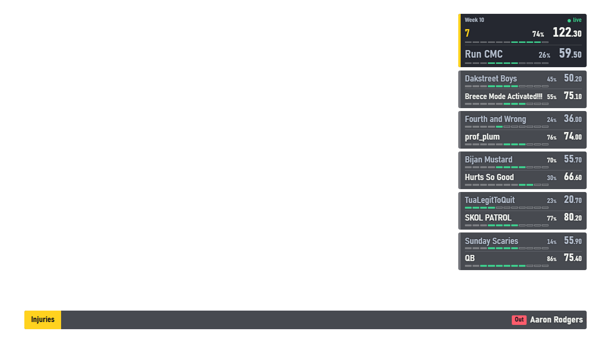
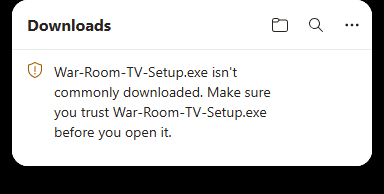
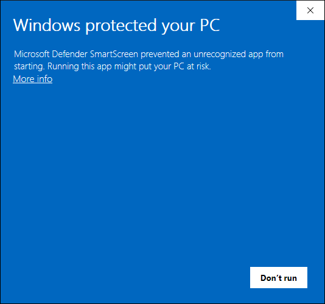
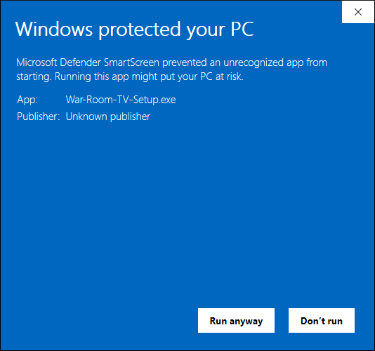
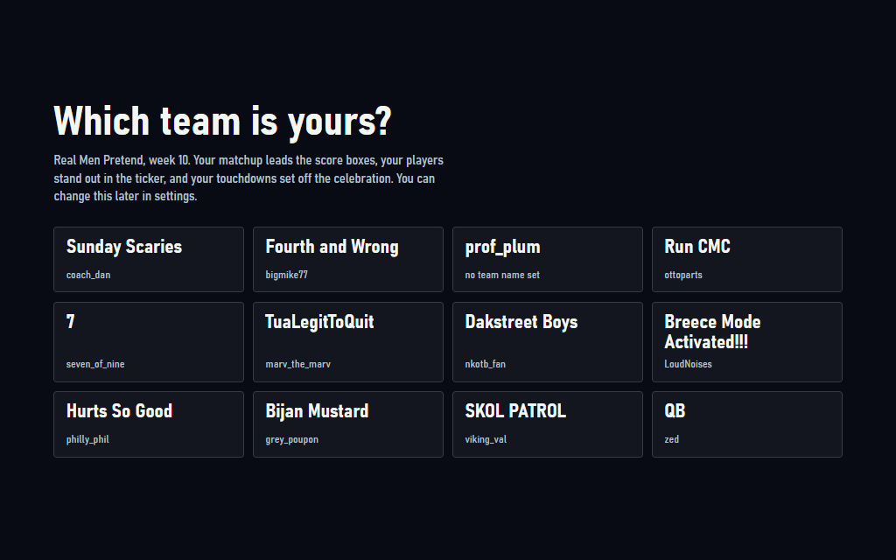
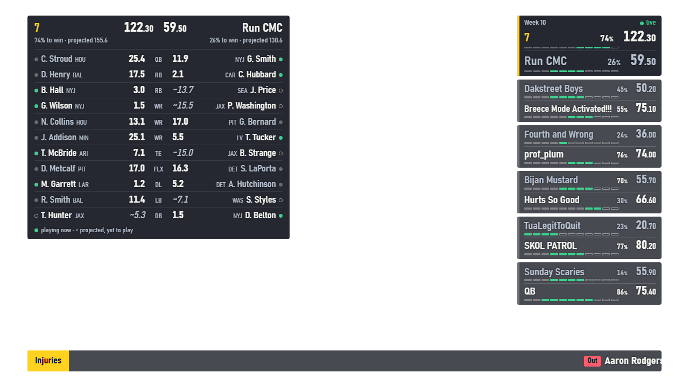

A score box for every Real Men Pretend matchup with each team's chance of winning, a ticker of injuries and point leaders, and a celebration when one of your starters scores. It sits over whatever you are watching.
No account, no sign-up.
No account, no sign-up.
The Mac version is brand new. If anything looks off, say so in the league chat.
New in version 0.2: each team's chance of winning beside its score, and your matchup player by player. Already have War Room TV? Download it again to update.

Press the yellow button. The file is called War-Room-TV-Setup.exe.
Chrome usually just downloads it. Edge holds it back, because it is a new file that few people have downloaded yet, and shows this:

Open the file. Windows shows a blue box. It does this for every app whose maker has not bought a certificate from Microsoft, and this one was made for our league, for free.


The app opens by itself and asks which team is yours. Click it once. It remembers.

Now put the game on full screen the way you always do. The score boxes stay on top, and your mouse and keyboard still work the video underneath.
Press the yellow button. The file is called War-Room-TV-mac.dmg. Open it, then drag War Room TV onto the Applications folder in the window that appears.
Open War Room TV from Applications. macOS says "War Room TV" Not Opened, because Apple could not check it. It says this for every app whose maker has not paid Apple for a developer account, and this one was made for our league, for free.
You only do this once. On macOS 13 or 14 there is a shortcut instead: hold Control, click the app, choose Open, then Open again.
If macOS says the app is damaged and can't be opened, stop and tell the league. That is not a warning to click through.
The app opens and asks which team is yours. Click it once. It remembers.
Now put the game on full screen the way you always do. The score boxes stay on top, and your mouse and keyboard still work the video underneath. The app has no Dock icon: look for the small TV in the menu bar, at the top of the screen.
They work from anywhere, even while the game is full screen.

It has no window of its own: only the boxes over the game, and a small TV icon by the clock (it may be behind the ^ arrow). To get settings back, press Ctrl + Alt + O, click that icon, or just open War Room TV again from the Start menu.
To close it, click the TV icon and choose Quit.
There is no Dock icon and no window: only the boxes over the game, and a small TV in the menu bar at the top of the screen. Click it for settings or to quit. The keys use Control + Option.
To remove it, quit it from that icon and drag War Room TV from Applications to the Trash. Your sounds folder, War Room TV inside Music, is left alone.
Streams run behind the real game, some by a minute. In settings, raise Delay until the celebration lines up with what is on your screen.
The clips are in a folder called War Room TV inside your Music folder. Drop your own sound files in there for your touchdowns, and into its against folder for when your opponent scores. Delete any you do not like and they stay gone. Ctrl + Alt + M mutes everything.
That is a stricter Windows setting than the blue box, and it offers no "Run anyway". It refuses every app without a certificate, and there is no exception for one app. The only way past it is to switch Smart App Control off, in Windows Security, under App & browser control. On an up-to-date Windows 11 you can switch it back on afterwards; on an older one you cannot, so decide before you do it.
The app plays five-second excerpts, cut with a fade-out and with the volume evened, from these recordings:
Licences: CC BY 4.0, CC BY 3.0. The full list with links is inside the app, under settings.